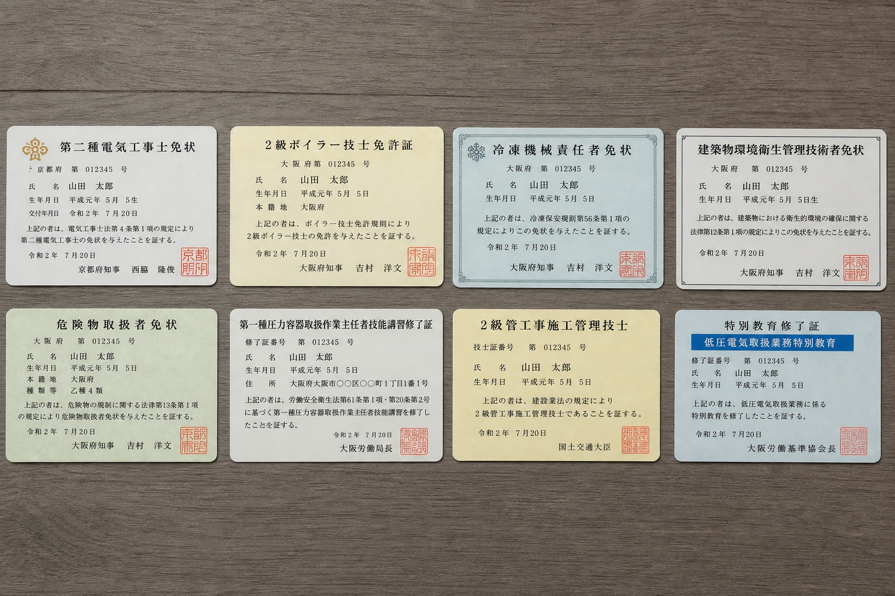

私たちが当たり前に過ごしている、オフィスビル、病院、ショッピングモール、ホテル、データセンター。そのどこにも必ず、「ビルメン」と呼ばれる人たちがいます。
ビルメンとは、ビルの設備管理（Building Management）の略。電気・空調・水道・消防・防災。あらゆる設備を、24時間体制で守る仕事です。外から見ると地味かもしれません。でも、その建物の中で働く人、訪れる人、暮らす人の「安心」は、ぜんぶ彼らが支えています。
電気が止まらないこと、エレベーターが動くこと、お湯が出ること、煙感知器が誤作動しないこと。当たり前を「当たり前」のまま保つ。それが、ビルメンの仕事です。
— 機械室は、ビルの心臓部。ここを守るのが、ビルメンの仕事です。
なぜ、AI時代に強いのか
AIにできないことが、ビルメン業界には2つあります。
1. 現場での判断は、AIには真似できない
配電盤の前で、聞き慣れない音が鳴る。匂いがする。温度が違う。そのとき何が起きているのかを判断するのは、現場で経験を積んだ人間です。データだけでは見えない兆候を、五感で捉える。これはAIには真似できません。
2. 責任を取れるのは、人だけ
火災が起きたとき、停電したとき、誰がボタンを押すのか。判断を遅らせれば人の命が失われる現場で、AIに「判断」を任せることは、当面の間ありません。だから、ビルメン系の資格は「一生モノ」と言われます。20年後、30年後も、必要とされ続ける確信のある仕事です。
業界の規模と将来性
国内のビルメン業界は、約100万人の従事者がいると言われています。高度成長期に建てられたビルが大量にメンテナンス時期を迎え、需要は今後も増え続ける見込みです。反面、若い人材の流入が少なく、業界全体が「人手不足」。未経験から入っても、資格を取って2〜3年経験を積めば、確実に「必要とされる人」になれます。
こんな人に向いている
- 黙々と作業するのが苦じゃない
- 「直す」「直る」が好き
- 規則正しいシフト勤務が苦にならない
- AI時代に「物理的に置き換わらない仕事」を選びたい
- 大卒・文系・未経験でも問題なし
ビルメン業界には、覚えきれないほどの資格があります。でも、最初に押さえるべきは8本だけ。

— ビルメン4点セット＋中級2＋上位2。これがビルメン業界の主要8資格。
入門4資格（通称・ビルメン4点セット）
ビルメン業界の「持ってないと話にならない」最重要資格。学科＋技能の2段階。
通称「乙4」。ガソリン・灯油などの取扱責任者になれる、業界の登竜門。
大型のボイラー設備を扱える資格。実技講習（3日間）が別途必要。
冷凍空調設備の保安責任者。ビル空調を任せられる人になれる。
中級2資格
第二種の上位資格。500kW未満の自家用工事ができる。年収アップに直結。
自動火災報知設備の工事・整備ができる。ビル管理の必須知識。
上位2資格
3,000㎡以上のビルに選任義務がある最上位資格。資格手当だけで月2〜3万。
大規模工場・大型ビルの省エネ管理者。理系知識が多めだが、年収は跳ね上がる。
このうち「ビルメン4点セット」を取れば、業界の入口は確実に開きます。そこからキャリアに応じて、上位資格に挑戦していくのが王道ルートです。
3つのパターンで、あなたの「最初の1本」を診断します。
理由は3つ。①ビルメン業界で「持ってないと話にならない」最重要資格、②年2回試験で最短6ヶ月、③学科と技能で現場力が身につく。文系・未経験でも、独学＋通信講座で十分合格圏内です。
実務経験2年以上があれば受験可能。合格率20%前後と難関ですが、取得後の年収は確実に上がります。ビル管理士の資格手当は月2〜3万円アップが相場。1年で取り返せる投資です。
合格率35%前後、勉強時間60時間で取れる入門資格。「資格を取って合格する」経験を取り戻すことから始めましょう。そこから半年ごとに1本ずつ。1年半後にはビルメン4点セット完成です。
第二種電気工事士｜現場で電気をいじれる、公的な証明
一般住宅、店舗、ビル内の600V以下の電気工事を行うことができる、国家資格。ビルメン業界で「最初に取るべき1本」と言われ続けている定番です。年2回（上期5〜7月／下期10〜12月）に試験があり、学科試験＋技能試験の2段階で構成されています。
技能試験では実際に電線を切って、リングスリーブで接続して、コンセントや器具を取り付けます。最初は「こんなのできるのか…」と不安になりますが、毎年同じ13問の中から1問が出題される形式なので、練習さえ重ねれば確実に合格できます。
危険物取扱者 乙種第4類｜業界の登竜門
ガソリン、灯油、軽油、重油などの「第4類危険物」の取扱責任者になれる資格。ガソリンスタンドはもちろん、ビルの自家発電装置の燃料管理、病院の暖房用ボイラー燃料の管理など、ビルメン業界で必須の知識です。
勉強時間は60〜80時間。電工2種より易しいですが、合格率は35%前後と意外に低めです。理由は「軽い気持ちで受ける人が多い」から。腰を据えて1ヶ月勉強すれば、十分合格できます。
2級ボイラー技士｜熱と圧力を扱う免許
伝熱面積25㎡未満の小規模ボイラーを取り扱える資格。ビル暖房、給湯、ホテル温泉設備、病院の滅菌装置など、お湯と蒸気を使う設備すべてに関わります。
試験そのものは合格率55%前後で難しくありませんが、受験前に「ボイラー実技講習」（3日間・約2万円）を受ける必要があります。実技講習がないと免許申請ができないので注意。
第三種冷凍機械責任者｜空調の心臓を任される
1日100トン未満の冷凍能力を持つ冷凍空調設備の保安責任者。ビル空調、スーパーの冷凍冷蔵設備、データセンターのサーバー冷却。すべての「冷やす」現場で活躍できる資格です。
試験は年1回（11月）のみで、合格率は30%前後。法令・保安管理・学識の3科目で、特に学識は計算問題が出るため文系出身者は苦手意識を持ちやすい分野です。とはいえ、市販テキストでしっかり対策すれば独学合格は十分可能です。
第一種電気工事士｜キャリアの次のステージ
最大電力500kW未満の自家用電気工作物の工事ができる、第二種の上位資格。大型ビル・工場の電気工事を担当できるようになり、給与レンジが一段上がります。第二種を取って3年ほど経験を積んでから挑戦するのが定番ルート。
消防設備士 甲種4類｜火災から建物を守る
自動火災報知設備、消火設備、避難設備の工事・整備ができる資格。「甲種4類」は自動火災報知設備の専門で、ビル管理に必須レベルの知識として位置付けられています。受験には電気工事士などの一定の資格や実務経験が必要。
ビル管理士｜業界の最高峰へ
正式名称は「建築物環境衛生管理技術者」。3,000㎡以上の特定建築物に1人選任義務があるため、需要が安定しています。受験には2年以上の実務経験が必要で、合格率は20%前後と難関。
でも、取得すれば資格手当だけで月2〜3万円アップが相場。取れる人は確実に取りに行くべき、生涯コスパ最強の資格です。
エネルギー管理士｜省エネ時代の主役
年間エネルギー使用量1,500kL（原油換算）以上の工場・ビルで選任義務がある資格。電気と熱の両方の管理ができ、大規模施設の省エネ計画の責任者になれます。難関ですが、取れば年収700万円以上のステージも見えてくる、上級職への切符です。
独学派｜時間はあるけど、お金はかけたくない方へ
結論から言うと、第二種電工・乙4・ボイラー2級・冷凍3種は独学で十分合格できます。市販テキスト＋過去問だけで、合計1〜2万円。一番安く済む方法です。ただし、技能試験がある電工2種は「練習用の器具と電線」を別途揃える必要があるので、合計3〜4万円は見ておきましょう。
定番テキストは「ぜんぶ絵で見て覚える」「すい〜っと合格」シリーズ。本屋で立ち読みして、自分に合う方を選んでください。
通信講座派｜効率と合格率を買いたい方へ
仕事をしながら、最短ルートで取りたい人向け。動画講義＋演習問題＋質問対応がセットで、合格率は独学より2〜3倍高いとされています。代表的な3社を比べてみました。
※価格は2026年5月時点の代表的なコース。詳細は各公式サイトでご確認ください。当サイトにはアフィリエイト広告（PR）が含まれます。
通学派｜ガチで挑む人、技能不安な人へ
第二種電気工事士の技能試験対策に限定して、2〜3日間の集中講習を受けるという方法もあります。代表的なのが日本電気工事士協会の講習会で、費用は2〜3万円。教室で実機を触れる安心感は、独学にはない強みです。
現場別の年収レンジ
| 現場 | 想定年収 | 特徴 |
|---|---|---|
| オフィスビル | 350〜500万 | 平日中心、安定。未経験スタート向き。 |
| 商業施設 | 380〜520万 | 不規則だが手当多め。テナント対応あり。 |
| ホテル | 400〜550万 | 24時間体制、サービス業要素強め。 |
| データセンター | 450〜600万 | 専門性高め、IT知識との掛け合わせで強い。 |
| 工場 | 400〜550万 | 機械の知識重要。製造ライン特有のノウハウ。 |
| 病院 | 450〜650万 | 業界最高峰の難所。詳しくは下の特集で。 |
— 病院の中央監視室。ここに座る人が、建物の中の「命」を守っています。
病院ビルメンのリアル｜業界の最難関を歩く人たちへ
ビルメン業界には、昔から語り継がれている冗談があります。
「病院は行ってはいけない現場ナンバー1」。半分は冗談、半分は本気の言葉です。
なぜ「行ってはいけない」と言われるのか。理由は、大きく3つあります。
1つ目。人の命がかかっています。
病院の設備は、止まったら人が死ぬ設備です。ICUの電源、手術室の空調、医療ガス配管、滅菌装置、CT・MRI、自家発電。どれか1つが止まっても、患者さんの命に直結します。オフィスビルでなら「ちょっと電源落としていいですか？」で済む話が、病院では絶対に許されません。点検も工事も、稼働中の設備をいかに止めずに行うか、頭をフル回転させながら進めることになります。
2つ目。専門機器・機械の数が桁違いです。
普通のビルが「機械A、機械B、機械C」だとしたら、病院は「機械A〜Z、しかも各部署で違う」。医療ガス配管、滅菌器、空調の陽圧/陰圧切替、自家発電装置、無停電電源装置（UPS）、医療廃液処理、放射線遮蔽…。覚えるべき設備と図面の量が、他の現場とは比べものになりません。「これ、見たことないやつ」が毎日のように出てきます。マニュアルを読んでも追いつかない。先輩のメモ、設計図、現場で実際に触って覚えるしかない。それが病院です。
3つ目。休みがありません。設備は、止まりません。
24時間365日、稼働止まらず。患者さんが入院しているからです。他の現場なら「日曜の夜に工事します」で済む話が、病院では「いつ工事するんだ……?」となります。夜の手術が終わってから明け方まで、というギリギリの工事時間も珍しくありません。シフト勤務、当直、緊急呼び出し。「来週ぜったい休めるとは限らない」現場です。
— ICUの近くで、設備の点検を行う。電源を止めずに、慎重に。
…ここまで読んで、「うわ、絶対無理」と思ったかもしれません。それでも、病院ビルメンを選ぶ価値はあります。
第一に、給料が高いです。ビルメン業界の中で、病院は年収レンジが最も高い現場の一つです。責任の重さに対する手当、夜勤手当、当直手当。基本給ベースも他の現場より高めに設定されることが多く、5年で年収500万、10年で600万のラインに乗ります。
第二に、病院で3年経験すれば、どこの現場でも通用します。業界では「あの過酷な現場を乗り越えた人なら、ウチの現場も大丈夫だろう」という確かな信頼があります。転職市場でも、病院出身者は重宝されます。キャリアの「通行手形」になるのです。
第三に、やりがいが「人の命」と直結します。これは精神論ですが、本当に大きい。あなたが点検した発電機が、停電の夜にICUを守る。あなたが整備した空調が、新生児室の温度を保つ。誰も知らないけど、確実に「人の命を守っている」仕事です。
編集部の父も、今この記事を書いている瞬間も、病院の中央監視室で夜勤に入る日があります。「行ってはいけない現場ナンバー1」を選んだのは、確かに苦労もある。でもそれ以上に、「この建物の中の人を守っている」誇りがあるから。それが、現役ビルメンとしての本音です。
じゃあ、自分はどの現場を選ぶべき？
未経験から入るなら、最初の現場はオフィスビルか商業施設がおすすめです。そこで2〜3年、基礎を身につけてから、給料を上げるために病院・データセンターへ。これがビルメン業界での王道のキャリアラダーです。
最初から病院に飛び込みたい人は、覚悟さえあれば歓迎されます。むしろ「最初から病院で揉まれた人」は、現場での順応力が早いとも言われます。「キツいけど、その分だけ自分は強くなる」と思える人なら、最初から病院も選択肢です。
はい、確実に取れます。第二種電気工事士の合格者の半分以上は、文系出身と言われています。電気の知識がゼロからのスタートでも、3〜6ヶ月の学習で十分合格圏内です。
ビルメン4点セット＋実務経験1年があれば、年収400万円台のオファーは普通にあります。完全未経験でも、第二種電工と乙4を持っていれば「未経験歓迎」の求人で書類選考は通りやすくなります。
間に合います。むしろ、若手不足の業界で「経験豊富な大人」は歓迎されます。編集部の父も、52歳からビルメンの世界に飛び込みました。「もう遅い」は、この業界にはありません。
未経験スタートで月給22〜25万。経験3年で月給28〜35万。ビル管理士を取得すれば月給35〜45万まで上がります。年収ベースで300万→500万→600万のステップが、現実的に見える業界です。
重い物を運ぶ仕事ではないので、体力的にはオフィスワークと大差ありません。むしろ、座りっぱなしより健康的という人も多いです。階段の上り下りで足腰は丈夫になります。
現場によります。日勤専門の現場もあれば、24時間シフト制の現場もあります。基本は夜勤・当直がある現場の方が給料は高めです。ライフスタイルに合わせて選べる業界です。
紹介した8資格はすべて、一度取れば終身有効です。更新講習が必要なのは消防設備士など一部のみ。一度取れば一生モノ。これがビルメン系資格の最大の魅力です。
ビルメン系の各資格の過去問・教科書・解説は、姉妹サイト「ビルメンアカデミー」（bilumen.jp）で無料公開しています。
- 第二種電気工事士：全14章の教科書＋過去問演習
- 危険物乙4：全章テキスト＋分野別問題
- 2級ボイラー：法令・構造・取扱の完全攻略
- 3冷凍機械：計算問題の解き方完全マニュアル
- AI質問チャット（準備中）
元主任が監修した、現場の言葉で語る教科書。試験合格までの「もう一冊」として使ってください。